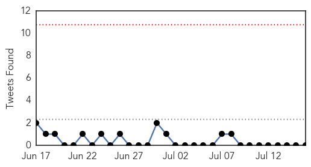
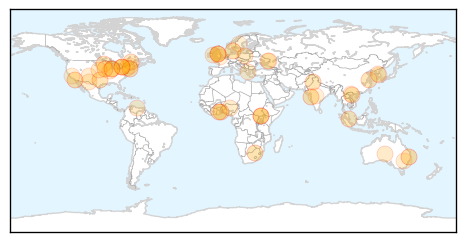

30 Day Trends
Web: 0 alerts, 0 warnings
Twitter: 0 alerts, 0 warnings
Top Articles:
- 0.983
- Q fever numbers 'not unusual'
- 0.966
- Chickenpox cases plunge in Ontario following public vaccine program: study
- 0.924
- Study finds huge drop in chickenpox cases after Ontario began public vaccine program
- 0.917
- Chicago Tribune
- 0.917
- Chicago Tribune
- 0.917
- Chicago Tribune
- 0.917
- Chicago Tribune
- 0.917
- Chicago Tribune
- 0.917
- Chicago Tribune
- 0.909
- No chemicals to fight bird flu - Farmers warn
- 0.898
- barfblog
- 0.876
- 162 die in the north as malaria hits hard
- 0.862
- East African news, Headlines, Business, Tourism, Sports, Health, Entertainment, Education
- 0.853
- Public Radio Tulsa
- 0.851
- Bird flu: Poultry farmers to be compensated- Hanna Bissew
- 0.829
- Stable patients leaving hospitals
- 0.801
- GBS bacterial infection 'unusual' for healthy adults, doctors say , news, Health News, AsiaOne YourHealth
- 0.801
- Hundreds of Chinese visit S. Korea as MERS scare dies down
- 0.760
- CDC: high-risk areas for Lyme disease growing
- 0.760
- Authorities warn of more Lyme disease in Montérégie - Montreal
- 0.741
- Alzheimer's May Affect African-Americans Differently Says Study : LIFE : Tech Times
- 0.730
- EU Authority Recommends Variety of ASF Control Measures
- 0.720
- SGGP English Edition- Four hospitals pledge to change medical workers' behaviors
- 0.698
- Defra seeks to minimise export damage from bird flu outbreak
- 0.692
- Madison County Confirming Case of Eastern Equine Encephalitis, or 'Triple E'
- 0.664
- MRSA Epidemic Fueling Antibiotic Resistance
- 0.640
- In eastern Ukraine, water shortage puts babies and mothers at risk
- 0.637
- Buruli ulcer: Significant breakthrough in cure for flesh-eating disease [Graphic images]
- 0.635
- News, Weather and Sports for Lincoln, NE; KLKNTV.com
- 0.626
- Doctors Warn Venezuelan Child Medical Care in Critical Condition
- 0.621
- Les députés demandent un mécanisme contraignant et permanent pour répartir les demandeurs d'asile dans l'UE
- 0.620
- Smart shots bring Nigeria to brink of polio eradication
- 0.598
- A Reader Reports A TB Scare In El Paso, Which Is NOT Being Reported Nationwide
- 0.592
- People of Munster still concerned about impact of austerity and health cutbacks
- 0.590
- UNICEF appeals for help to restore damaged water facilities for 1.3 million people
- 0.572
- Korean meetings industry stays strong as MERS cases subside. ~ Thursday, 16th July 2015 from 4Hoteliers
- 0.570
- New Mexico is throbbing with Tularemia warning
- 0.568
- The Caledonian-Record
- 0.560
- Alzheimer’s May Affect the Brain Differently in African-Americans than European-Americans
- 0.554
- Get the facts on Q-Fever At Free Forum
- 0.546
- Green Island restaurant linked to norovirus outbreak: health official
- 0.521
- Holistic Treatment Arthritis Dogs Illinois Springfield
- 0.518
- Eastern Visayas deworming drive targets 75% of vulnerable population
- 0.516
- A better understanding of resistance sought
- 0.509
- Health workers to improve attitudes
- 0.502
- Study shows Otsuka's TB drug works even in worst cases
- 0.502
- Cigna : and Providence-Swedish Health Alliance ACO Partner to Improve Quality and Lower Medical Costs
Top Tweets:
-
No tweets found for Jul 16, 2015
Web/News Articles

Tweets
Article Locations
Article Confidences